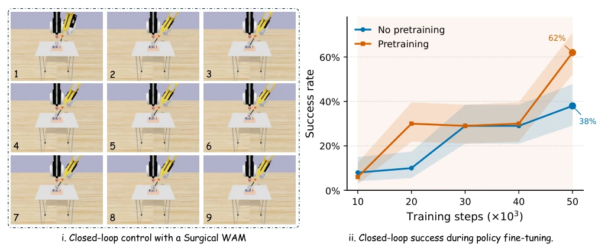
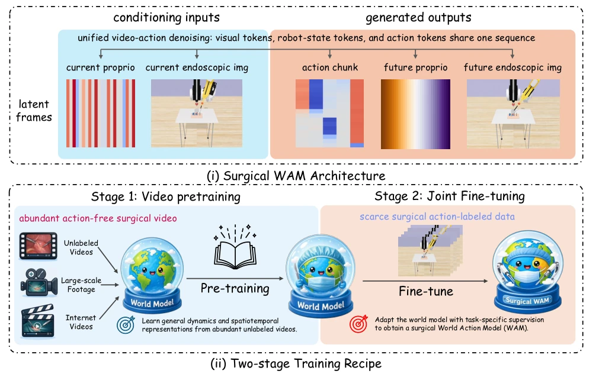
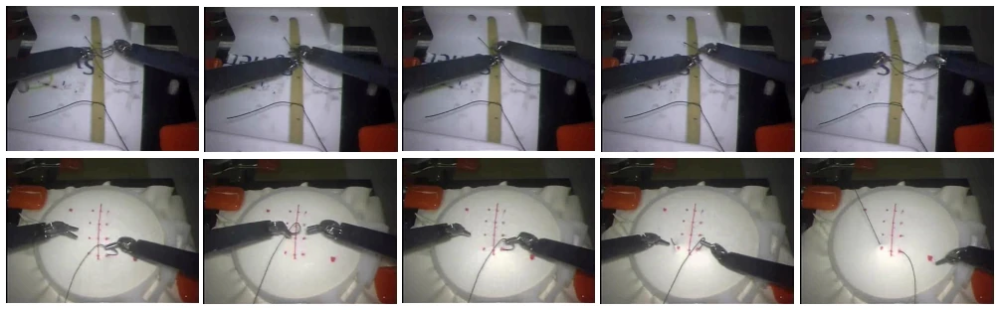

This paper pours cold water on the surgical robotics learning community, while also handing a ladder. The core viewpoint is sharp: since expensive action-annotated data is the bottleneck, one might as well first "freeload" visual dynamics priors from massive unlabeled videos. Surgical WAM combines world models and action prediction, which is indeed more pragmatic than those "pure world models" or "pure VLAs" that treat videos merely as toys. However, do not celebrate too early; this approach works exceptionally well in the simulator SurRoL, but on real-world JIGSAWS data, although the trend is consistent, it has not been fully run on real hardware, so the so-called "data efficiency" might just be "self-indulgence" within the simulator. Moreover, essentially it is still a patchwork of Cosmos Policy, with limited architectural innovation; the main contribution lies in verifying the feasibility of "video pre-training" in the surgical field, belonging to "correct nonsense" plus "effective engineering optimization," far from a true general-purpose surgical brain.
研究动机Motivation
手术机器人学习面临一个死结：想要高精度、长视距、双手协调的操作策略，必须依赖大量同步的运动学（kinematics）标注数据。然而，收集dVRK等手术机器人的遥操作轨迹成本极高，导致现有数据集（如JIGSAWS）仅有数百至数千条演示，远少于通用机器人学习所需的百万级数据（Haworth et al. 2025; Kim et al. 2025）。现有的世界模型（World Models）大多仅用于生成视频以评估外部策略（Zbinden et al. 2025）或作为合成数据生成器（He et al. 2026），未能将学到的动态直接转化为闭环控制。这种割裂导致模型无法利用丰富的无标签内窥镜视频来弥补动作数据的稀缺。本文旨在解决核心问题：在动作标注预算固定的前提下，利用无标签视频进行预训练，能否显著提升闭环手术操作的成功率？
Surgical robotics learning faces a deadlock: to achieve high-precision, long-horizon, bimanually coordinated manipulation strategies, one must rely on large amounts of synchronized kinematics (kinematics)-annotated data. However, collecting teleoperation trajectories for surgical robots like dVRK is extremely costly, resulting in existing datasets (e.g., JIGSAWS) having only hundreds to thousands of demonstrations, far fewer than the million-level data required for general robotics learning (Haworth et al. 2025; Kim et al. 2025). Existing World Models are mostly used only to generate videos for evaluating external policies (Zbinden et al. 2025) or as synthetic data generators (He et al. 2026), failing to directly translate learned dynamics into closed-loop control. This disconnect prevents models from utilizing abundant unlabeled endoscopic videos to compensate for the scarcity of action data. This paper aims to address the core question: under a fixed action annotation budget, can utilizing unlabeled videos for pre-training significantly improve the success rate of closed-loop surgical operations?

Figure 1: Surgical WAM drives closed-loop dVRK manipulation and makes policy learning markedly more efficient. (i) A dVRK robot driven by Surgical WAM performs the PegTransfer task in closed loop. At each control step, the model receives the current endoscopic observation and dVRK proprioception, jointly predicts future observations and an action chunk, executes a short prefix of the predicted actions, and replans from the resulting observation, progressing through reaching, grasping, lifting, transferring, and placing. (ii) The proposed action-free video pretraining substantially improves training efficiency: under the same action-labeled budget, the pretrained model attains a higher peak success rate with fewer fine-tuning steps (62% at 50k steps vs. 50% at 60k steps without pretraining,
This paper proposes Surgical WAM, based on the Cosmos Policy architecture, adopting a two-stage training strategy. The first stage is action-free video pre-training: utilizing massive unlabeled surgical videos, only the world model part is trained, learning visual dynamics of endoscopic scenes through a denoising diffusion model; at this time, action and state slots are masked (zeroed), consuming no action labels. The second stage is joint fine-tuning: based on pre-trained weights, using action-annotated data with a fixed budget for full model fine-tuning, simultaneously optimizing the joint loss of video prediction and action prediction (action chunk). During inference, the model acts as a closed-loop controller, adopting a receding-horizon (receding-horizon) strategy: inputting current observations and task embeddings, predicting future video sequences and action chunks, executing only the prefix part of the action chunk, then replanning based on new observations. This design allows the model to process visual and action information simultaneously in a shared latent sequence, utilizing dynamics priors learned from video pre-training to guide action prediction, avoiding the coordination difficulties of training world models and control strategies separately.

Figure 2: Surgical WAM architecture and two-stage training recipe. (Top) Architecture. Closed-loop inference with the Surgical WAM on SurRoL peg transfer. At each control step, the model conditions on the current endoscopic frame, robot state and goal, and the task text. A single video-action diffusion transformer samples an action chunk in the same latent sequence used for visual/state prediction. (Bottom) Two-stage training recipe. Stage 1 (Video pretraining): the world model is fine-tuned on unlabeled surgical video using only the video loss Lvid; action latent frames are masked (zeroed). Stage 2 (Joint fine-tuning): the pretrained world model is jointly fine-tuned on action-labeled demonstrations using the full objective Ljoint.
Evaluated on four tasks of the SurRoL simulation benchmark (Needle Pick, Peg Transfer, Needle Regrasp, BiPeg Transfer). Baselines include BET, DEX, ALOHA, Diffusion Policy, and π0.5, etc. Results show that Surgical WAM (without pre-training) achieved only 66% on Peg Transfer, while after adding video pre-training it improved to 86%, an absolute gain of 20 percentage points, with average success rate increasing from 63.5% to 77.8%. Ablation studies indicate that the pre-trained model requires only half the fine-tuning steps (80k vs 160k) to reach peak performance, with the most significant improvements in contact-rich and bimanual tasks. Additionally, qualitative experiments on real JIGSAWS videos also verify that this advantage is not a simulator artifact.

Figure 3: Real-robot surgical manipulation sequences from JIGSAWS. Representative endoscopic frames from the JIGSAWS dVRK teleoperation recordings used in our real-data experiments, with task progress shown from left to right. (Top) Knot tying. (Bottom) Suturing.